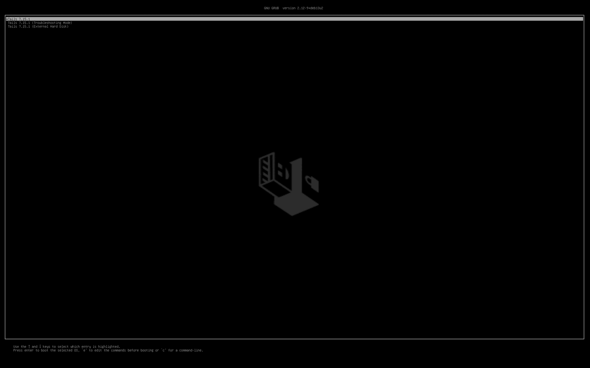
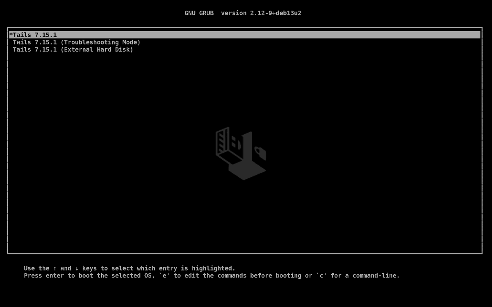

The Tails boot menu text is too small. Here is what actually makes it bigger
On a high-resolution laptop screen, the GRUB menu on a Tails USB stick, where you pick the kernel and boot options, is microscopic. The usual advice, lowering GRUB's resolution, works on some machines and does nothing on others. This page explains why, and the fix that works at any resolution.
Before and after
The same Tails 7.15.1 stick and GRUB, on firmware that offers only its native 2560×1600 mode, as many Retina MacBooks do. Captured in QEMU/OVMF and scaled down.

gfxmode only. No smaller mode exists, so the text stays tiny.
gfxterm_font. Same resolution, readable.Why it's tiny, and the two ways to fix it
Tails' GRUB draws its menu with a roughly 16-pixel font at whatever resolution it runs at. On a 2560×1600 panel that is about 1% of the screen height. There are two levers:
| Lever | How | Catch |
|---|---|---|
| Lower the resolution | set gfxmode=640x480,800x600,1024x768,auto |
GRUB can only use modes the firmware offers. Many Macs and HiDPI laptops
offer only the native mode, so this falls through to auto and changes nothing. |
| Use a bigger font | loadfont a large PF2, then
set gfxterm_font="…" |
Works at any resolution. Mind the order: without
gfxterm_font, GRUB uses the last font loaded, and Tails loads its own
16px unicode font. Load yours too early and nothing changes, which is why many
people conclude fonts "don't work". Selecting it by name avoids that. Blocked by Secure Boot
lockdown. |
The reliable answer is the font, with the resolution trick kept as a fallback for when GRUB refuses the font.
The fix, by hand
-
Make a large GRUB font
On any Linux machine with GRUB's tools (
grub-mkfont, orgrub2-mkfonton Fedora):grub-mkfont -n TailsBig -s 32 \ -r 0x20-0x7E,0xA0-0xFF,0x2190-0x21FF,0x2500-0x25FF \ -o tailsbig.pf2 /usr/share/fonts/truetype/dejavu/DejaVuSansMono-Bold.ttfThe font's name becomes
TailsBig Bold 32(family, style, size). The ranges cover ASCII, Latin-1, arrows and the box-drawing characters GRUB's menu uses. The path to the DejaVu font varies by distribution. -
Copy it to the Tails partition
Put it at
EFI/debian/grub/fonts/tailsbig.pf2on the stick'sTailspartition. -
Load and select it in GRUB's config
In
EFI/debian/grub.cfg(and its copyEFI/debian/grub/grub.cfg), add this immediately beforeterminal_output gfxterm:if loadfont /EFI/debian/grub/fonts/tailsbig.pf2; then set gfxterm_font="TailsBig Bold 32" set gfxmode=1024x768,auto else set gfxmode=640x480,800x600,1024x768,auto fiIf the font loads, it's selected by name and used at any resolution. If GRUB refuses it, for example under Secure Boot, the
elsebranch falls back to lowering the resolution.autoat the end means the screen can't go blank.
Edit only the Tails system partition: the unencrypted vfat
partition labelled Tails. Never touch the LUKS Persistent Storage partition. Keep a
copy of each file you edit. Tails rewrites its GRUB files on every system
upgrade, so the change has to be made again afterwards.
Secure Boot
With Secure Boot on, Tails' signed GRUB runs in lockdown mode and refuses fonts
from the USB stick. The else branch then lowers the resolution instead, which is as
big as the text can get there. If that machine also offers only its native mode, the menu stays
small unless Secure Boot is turned off in the firmware settings.
The tool: tails-bigfont
Automated:
tails-bigfont does all of the above. It
carries the 32px font inside itself, finds the stick (LABEL=Tails,
FSTYPE=vfat), mounts it with udisksctl without sudo where it can,
writes a clearly marked block into both GRUB configs, sets a 15-second menu timeout, and
unmounts the same way it mounted. It's idempotent, so it's safe to re-run after every Tails
upgrade, and --revert removes everything and restores Tails' original timeout.
Install
git clone https://github.com/doug445/tails-bigfont.git
cd tails-bigfont
./install.shinstall.sh is self-contained, with the whole tool and font embedded, so you can
also download
just that one file and run it on any Linux machine. It installs tails-bigfont to
/usr/local/bin (or ~/.local/bin), plus tailsfont and
tailsbig as shortcuts that work in any shell.
Update
git pull && ./install.shThen run tailsbig again with the stick plugged in, so the stick gets the new
version's changes too.
Use
tailsbig # plug in the stick; it finds the Tails partition
tailsbig -t 10 # custom GRUB timeout (default 15)
tailsbig -s 48 # bigger font, e.g. for 4K (needs grub-mkfont locally)
tailsbig -d /dev/sdb1 # pick the partition yourself if several sticks are plugged in
tailsbig --revert # remove all changes and the font
tailsbig --versionFree and open source, MIT licence. The bundled font is a renamed subset of DejaVu Sans Mono Bold under its own permissive licence. See the changelog and latest release.
FAQ
Why doesn't lowering gfxmode make the Tails GRUB menu bigger on my laptop?
GRUB can only switch to resolutions the firmware offers. Many Macs and high-resolution laptops offer only the panel's native mode, so a gfxmode list like 640x480,800x600,1024x768,auto falls through to auto and the text stays tiny. A larger font fixes it at any resolution.
I loaded a bigger GRUB font and nothing changed. Why?
Without set gfxterm_font, GRUB uses the most recently loaded font. Tails runs
loadfont unicode in its own config, so a bigger font loaded before that line loses
to Tails' 16-pixel font and nothing changes. Load yours after Tails' loadfont
line, or better, select it by name with set gfxterm_font, which works regardless
of order.
Does it work with Secure Boot enabled?
Partly. With Secure Boot on, Tails' signed GRUB runs in lockdown and refuses fonts from the USB stick, so tails-bigfont automatically falls back to lowering the resolution. If the firmware also offers only its native mode, the menu stays small unless Secure Boot is turned off.
Does it touch my Persistent Storage?
No. Only the unencrypted Tails system partition (vfat, label Tails) is edited. The LUKS Persistent Storage partition is never touched.
Do I have to redo it after a Tails upgrade?
Yes. Tails rewrites its GRUB configuration during every system upgrade, which removes the change. Re-run the tool afterwards; it is idempotent, so running it again is always safe.
Can it leave the boot menu blank or broken?
No. If the font can't be loaded, GRUB takes the fallback branch, and the resolution list ends
with auto, so GRUB can always fall back to its usual choice. --revert removes
every change and restores Tails' original timeout.
I used version 1. What changes?
Version 1 only lowered the resolution, so it helped on some machines and not others. Update
with git pull && ./install.sh, then run tailsbig on the
stick. It replaces version 1's line with the new block automatically.